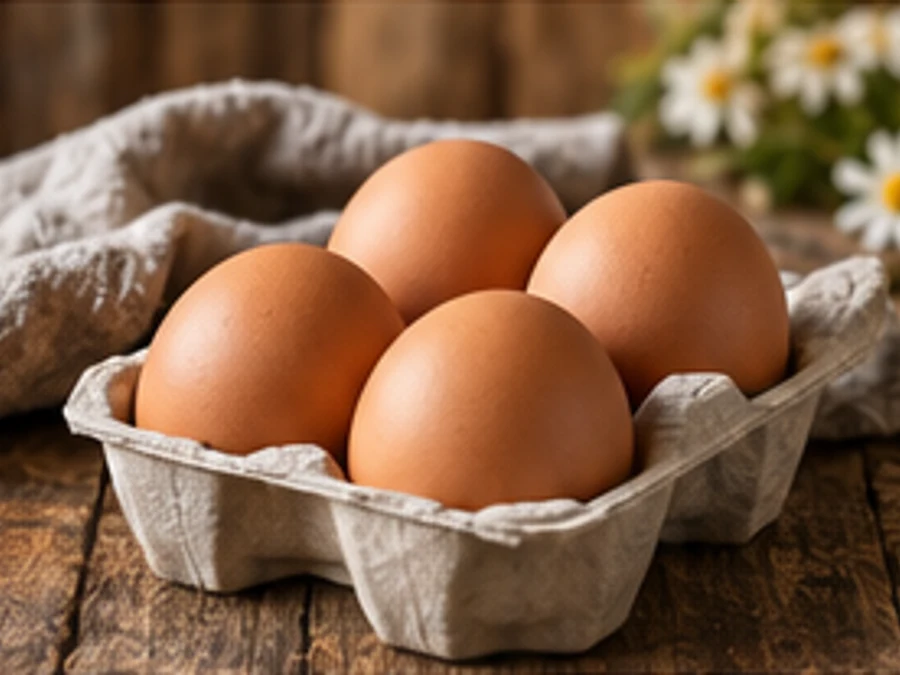
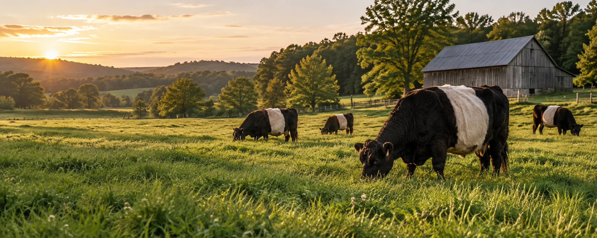
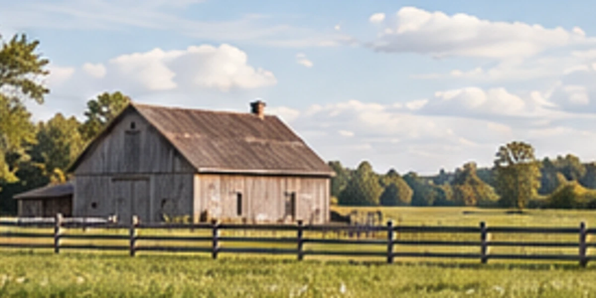

From our farm
to your table.
Farm-fresh food. A family tradition.
Sample Farm Road, the countrysideView Hours & Directions →
The farm store
Good food, grown close to home.

Our story
A family tradition.
One love for the land.
Rooted in family. Proud to serve our community.
Keep up with the farm.
A demonstration farm website. Replace the sample content, prices and contact details before publishing.